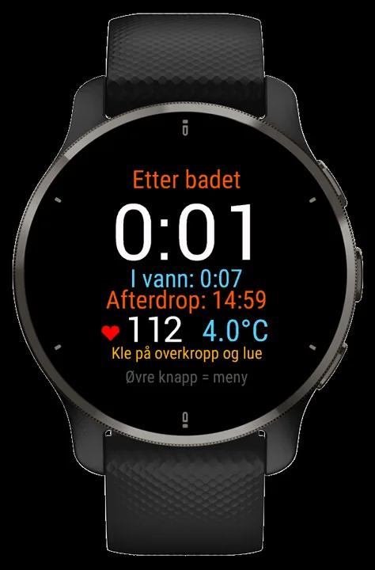
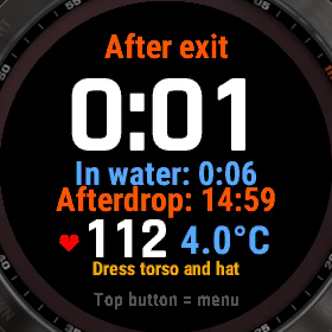

Mors – tarcza
Animert hvalross-skive for isbading
3,99 USD 24 timers gratis prøveperiode
Kommer snart i Connect IQ Store Hent den i Connect IQ Les mer
På klokken heter appen Isbading.
Isbading og kalde bad lagret skikkelig — ikke som svømming.
Eller søk etter «Cold Dip» i Connect IQ-appen på telefonen.


Urskiver
To hvalross-urskiver for isbading. Mors – tarcza endrer seg med været. Mors Level stiger med sesongminuttene dine.
Animert hvalross-skive for isbading
3,99 USD 24 timers gratis prøveperiode
Kommer snart i Connect IQ Store Hent den i Connect IQ Les mer

Spillifisert hvalross-skive for isbading
2,99 USD 7 dagers gratis prøveperiode
Kommer snart i Connect IQ Store Hent den i Connect IQ Les mer
Animert hvalross-skive for isbading
Hvalrossen reagerer på været: bølger i fint vær, lue i frost, rister av seg snøen og hopper i ishullet når det er isbadevær. Tid, dato, lufttemperatur, vær, puls, skritt og batteri. Animasjonen spilles når du vekker klokken — aldri i always-on-modus.
3,99 USD engangskjøp, pluss merverdiavgift der det gjelder
Fargerik animasjon på AMOLED-klokker som Venu 2, 2 Plus, 3 og 4, vívoactive 5 og 6, Forerunner 165, 170, 265, 570, 965 og 970, Fenix 8 og 9 (AMOLED), Epix 2, Descent Mk3, D2 Mach, Approach S70 og S72, Instinct 3 AMOLED og MARQ 2 og 3.
Denne skiven er ikke tilgjengelig på MIP-klokker og modeller med mindre minne, som Fenix 5 Plus, Fenix 6 og 7, Fenix Solar, Forerunner 245, 255, 745, 945 og 955, Enduro, Descent Mk2, vívoactive 4, Venu 1 og første generasjon MARQ. Disse skjermene kan ikke vise den fargerike animasjonen.
Spillifisert hvalross-skive for isbading
Hvalrossen din stiger gjennom 5 nivåer etter hvert som sesongens kaldtvannsminutter vokser — live fra den gratis appen Cold Dip. Om vinteren et rykende ishull, om sommeren en strand, merke for badrekke, vanntemperatur, puls, batteri og en ren always-on-skjerm. Vekkeanimasjonen spilles når du vekker klokken — aldri i always-on-modus.
2,99 USD engangskjøp, pluss merverdiavgift der det gjelder · 7 dagers gratis prøveperiode
For å stige i nivå med live minutter, badrekke og vanntemperatur, installer den gratis appen Cold Dip. Uten den viser disse feltene bare klokkedata.
NYBEGYNNER 1/5


5 nivåer
1/5
0–29 min denne sesongen
2/5
30–119 min denne sesongen
3/5
120–299 min denne sesongen
4/5
300–599 min denne sesongen
5/5
600+ min denne sesongen


Fullfargeanimasjon på 51 AMOLED-klokker som Venu 2, 2 Plus, 3 og 4, vívoactive 5 og 6, Forerunner 165, 170, 265, 570, 965 og 970, Fenix 8 og 9 (AMOLED), Epix 2, Descent Mk3, D2 Mach, Approach S70 og S72, Instinct 3 AMOLED og MARQ 2 og 3. Always-on bruker svært få lysende piksler.
En tydelig, statisk skive på 19 MIP-klokker som Fenix 7, Fenix 8 Solar, Forerunner 255 og 955, og Enduro 3 og 4. Til sammen støtter Mors Level 70 Garmin-klokker, på 11 språk.
Laget for isbading, ikke for basseng. Du bestemmer hele tiden.
Øverste knapp bytter fase. Tiden i vannet bare fortsetter å telle — appen sier aldri at du skal gå opp. Det bestemmer du. Forrige tid er bare et referansepunkt, ikke et mål du må slå.
Pulsen lagres hele tiden. Vanntemperaturen skriver du inn manuelt, og den følger med i aktiviteten.
Lufttemperatur, følt temperatur og vind — fra Garmin-været på telefonen din.
Stedet du bader lagres og vises på kart i Garmin Connect.
Etter hvert bad en rask vurdering av hvordan du føler deg. I tillegg puls-topp og restitusjon, samt Body Battery og stress før du gikk uti.
Alt lagres i Garmin Connect som en egen aktivitet, ikke som svømming.
Engelsk, polsk, tysk, tsjekkisk, slovakisk, finsk, norsk, svensk, spansk, russisk og ukrainsk. Appen følger automatisk språket på klokken.
Forerunner, Fenix, Epix, Enduro, Venu, Vivoactive, Instinct 2 / 3 / E / Crossover og flere. Støttes ikke på svært gamle klokker som Forerunner 920XT (Connect IQ 1.x).
Søk etter modellen din. Listen omfatter de 133 klokkene i Cold Dip.
Svært gamle klokker med Connect IQ 1.x, som Forerunner 920XT, kan ikke støttes. Pro trenger en nyere klokke — søk etter modellen din for å sjekke.
Slik ser Cold Dip ut på ulike Garmin-skjermer.








De siste versjonene av Cold Dip.
133 klokker, inkludert Instinct 2, Instinct 2S, Instinct 2X, Instinct 3 Solar, Instinct E og Instinct Crossover, pluss en ny svart-hvitt-layout for MIP-skjermer.
126 klokker, inkludert Forerunner 55.
105 klokker, inkludert rektangulære layout for Venu X1 og Venu Sq 2.
Første utgave.
“Działa idealnie” (Fungerer perfekt)
Over 10 minutter ved 5°C — vanntemperatur på klokken, og alle data lagret i Garmin Connect.
Noen ting folk ofte spør om etter installasjon.
Installer den fra Connect IQ Store-appen på telefonen — ikke fra Google Play eller App Store. På klokken finner du Cold Dip (Isbading) i listen over aktiviteter / apper.
I profilen «Våk» stiller du den inn med knappene − / + på startskjermen. I andre profiler gjøres det fra menyen: «Vanntemp. manuelt». Hvis du ser «--°C» i vannet, er temperaturen ikke satt ennå.
Åpne aktiviteten, gå til fanen «Statistikk» og rull ned til delen «Connect IQ». Der finner du puls, vanntemperatur, vær, følelse og tidene i hver fase. Rutene på «Oversikt»-skjermen settes av Garmin — appen kan ikke endre dem.
Nei. Klokken kan ikke måle kroppstemperatur. Sensoren viser temperaturen til selve klokken, som påvirkes av huden og luften. I Cold Dip skriver du inn vanntemperaturen manuelt.
Kaloriene anslås av klokken ut fra pulsen, de beregnes ikke av Cold Dip.
Kaldt vann er alvor. Dette er generelle sikkerhetspåminnelser, ikke medisinske råd. Du bestemmer når du går i og når du går opp.
Gå alltid sammen med noen som kan hjelpe hvis noe skjer, eller sørg for at noen på land følger med på deg.
Hvis du er ny i kaldt vann, venner du deg til det over tid i stedet for å starte med et langt bad i svært kaldt vann.
Mange starter med bare kort tid i vannet og øker sakte. Det finnes ingen tid du «skal» holde ut.
Forlat vannet så snart du kjenner at du burde — kraftig skjelving, smerte, nummenhet, forvirring, eller bare en følelse av at det er nok. Cold Dip sier aldri at du skal gå opp, og setter aldri en mål-tid. Forrige tid er bare et referansepunkt.
Tørk deg og varm deg så snart du kan etter at du har gått opp. Ha varme klær klare før du går i.
Etter at du har gått opp, kan kjernetemperaturen fortsette å synke en stund mens kaldere blod kommer tilbake fra hud og armer og bein. Dette kalles ofte afterdrop. Fortsett å varme deg, ta det rolig, og vent til du føler deg bra før du kjører eller sykler.
Cold Dip er en registreringsapp, ikke et medisinsk utstyr, og gir ikke medisinske råd. Den kan ikke si om det er trygt for deg å gå i kaldt vann. Har du en helsetilstand, er du gravid, eller er du usikker, snakk først med en kvalifisert fagperson.
Et kort blikk på ett bad, fra startskjermen til lagringen i Garmin Connect.
Har du en idé til en Garmin-app eller en klokkeskjerm? La oss lage den sammen. Skriv til meg og fortell hvilken klokke du bruker.
Hvis du allerede bruker Cold Dip, hjelper en omtale i Connect IQ mye — takk!
Cold Dip er gratis. Hvis den hjelper på badene dine, kan du støtte arbeidet bak den.
Spander en kaffe